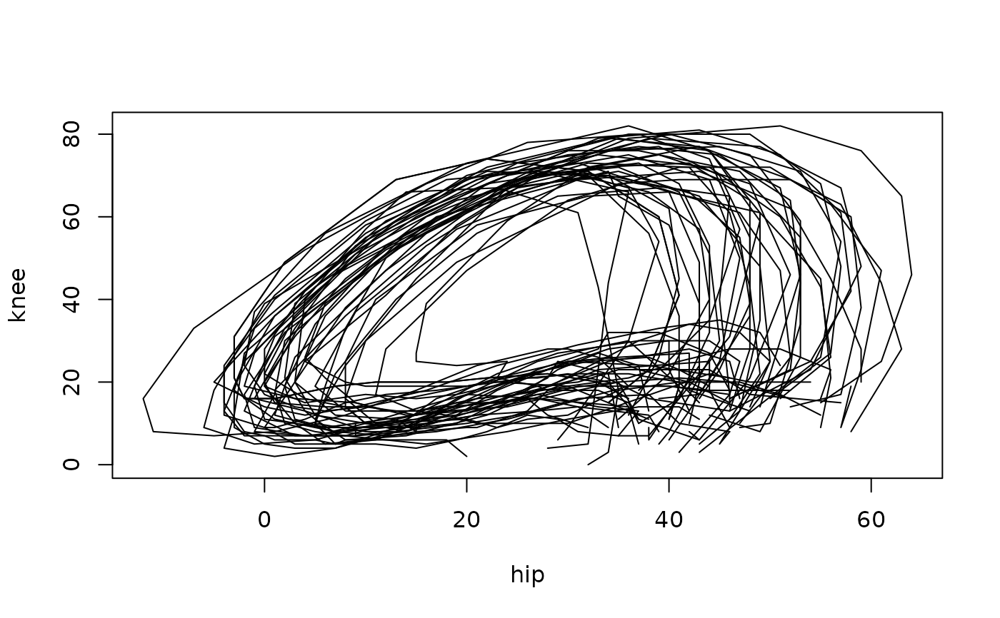

The same trajectories as in gait, but with the hip and knee angles of each
subject bundled into one vector-valued curve \(t \mapsto (\text{hip}(t),
\text{knee}(t))\) of class tfd_mv, see tfd_mv().
Format
A data frame with 39 rows and 2 variables:
- subject_id
subject identifier
- joint_angle
a
tfd_mvcolumn with componentshipandknee, the hip- and knee-joint angles (degrees)
References
Olshen, A R, Biden, N E, Wyatt, P M, Sutherland, H D (1989). “Gait Analysis and the Bootstrap.” The Annals of Statistics, 17(4), 1419–1440.
Examples
head(gait_mv)
#> subject_id joint_angle
#> 1 1 ▆▆▅▅▄▃▃▃▂▂▂▂▃▄▅▆▇▇▆▆ | ▂▂▂▂▂▂▂▂▂▃▃▄▆▇█▇▆▅▃▂
#> 2 2 ▇▇▇▅▅▄▃▃▂▁▁▁▃▄▅▇▇▇▇▇ | ▂▃▃▃▂▂▂▁▁▁▂▄▆▇█▇▆▄▃▂
#> 3 3 ▇▇▆▅▅▅▄▃▂▁▁▁▂▄▅▇███▇ | ▂▃▄▄▃▃▂▂▁▂▂▄▆███▇▅▃▂
#> 4 4 ▆▆▅▄▃▃▂▂▁▁▁▂▂▃▄▅▅▆▅▅ | ▁▂▂▂▂▁▁▁▁▁▃▅▆▇▇▇▅▂▁▁
#> 5 5 ▄▃▂▂▂▂▁▁▁▁▁▁▂▃▅▆▅▅▅▅ | ▁▁▁▁▁▁▁▁▁▂▃▅▆▇█▇▅▃▁▁
#> 6 6 █▇▇▆▅▅▄▃▃▂▂▂▂▄▅▆▇███ | ▂▂▃▃▃▂▂▂▁▂▂▃▅▆▇▇▇▅▃▁
plot(gait_mv$joint_angle)

# component access:
gait_mv$joint_angle$hip
#> tfd[39]: [0.025,0.975] -> [-12,64] based on 20 evaluations each
#> interpolation by tf_approx_linear
#> boy1: ▆▆▅▅▄▄▃▃▃▂▂▂▃▄▅▆▆▆▆▅
#> boy2: ▇▇▆▅▅▄▃▃▂▂▂▂▃▄▅▆▇▇▆▆
#> boy3: ▇▆▆▅▅▅▄▃▂▂▁▂▃▄▅▆▇▇▇▇
#> boy4: ▆▆▅▄▃▃▃▂▂▂▂▂▃▃▄▅▅▅▅▅
#> boy5: ▄▄▃▃▂▂▂▂▂▁▁▂▃▄▅▆▅▅▅▅
#> boy6: █▇▆▅▅▅▄▄▃▃▃▃▃▄▅▆▇███
#> [....] (33 not shown)